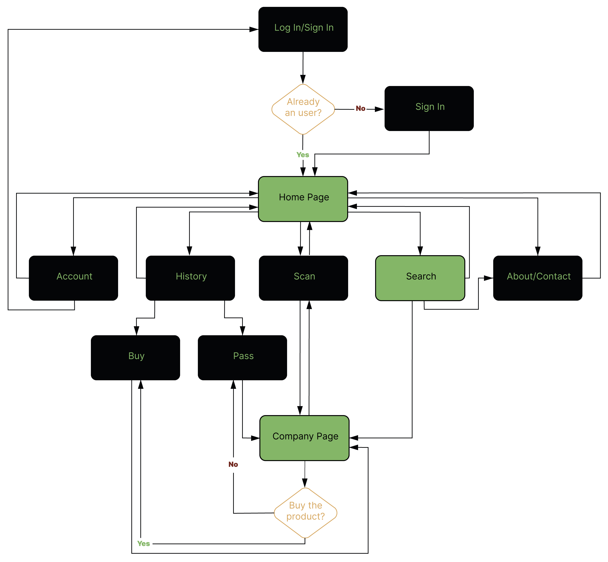
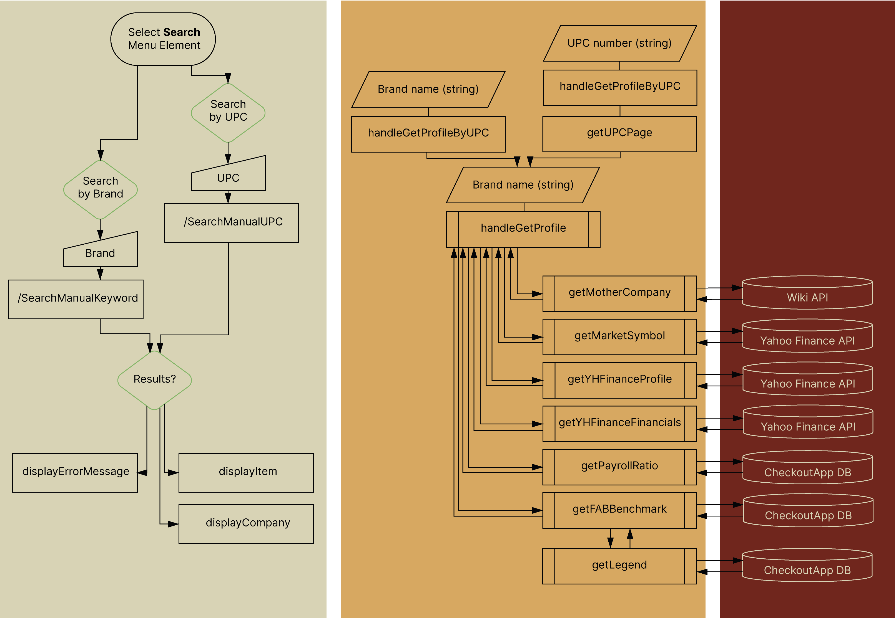

Project Overview (Initial State)
Week 1 to 3 (Until January 25th, 2023)
HIGH-LEVEL DESCRIPTION:
This project is an app that allows good consumers to get a fuller and quicker picture of the different companies selling food across America. Everytime an user scans a product’s UPC code (or enters it in the search bar), the program searches into different databases to identify the mother company of the brand and different outsourced assessments regarding their workers' treatment, its management governance, its environmental impacts, and its nutritional values. After displaying the company’s page, the user then indicates if he decided to buy or not the product and the reason(s) behind it. This allows the users to revisit their different buying decisions with a timestamp and visual depictions of their reasons.
The web-based tool is built on Node.js.
TECHNOLOGIES IMPLEMENTED SO FAR:
From the whole concept, the green nodes are the ones already working and implemented in this GUI navigation flowchart:
Essentially, the basic code for the SEARCH component of the overall project is written. This part is the most crucial one, since it handles the research through different databases to obtain a company profile on different predetermined aspects. From user input (UPC code or brand), I am already able to achieve the basic research and data handling for the company profile, financials and external sources about its habits. Here is a flowchart depicting the interactions between the client and the server sides to achieve the search component:
You can also read an exerpt of my final project report in my previous class about the mechanics of my code for more details: